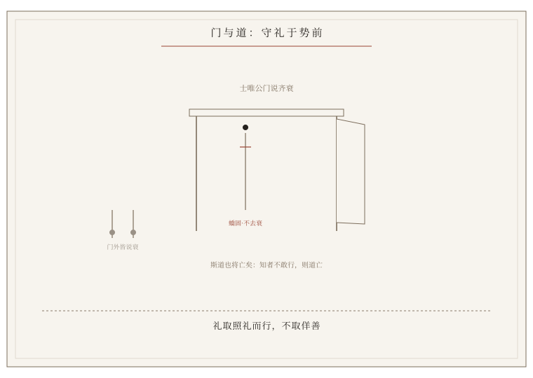

檀弓下 · 四·五 · 第 330 课
季武子寝疾，蟜固不说齐衰而入见，曰：「斯道也将亡矣，士唯公门说齐衰。」武子曰：「不亦善乎！君子表微。」及其丧也，曾点倚其门而歌。
说什么事：季武子专政，国人待之如君，进他的门都脱去齐衰。蟜固偏不脱，穿齐衰进去，说：「这道要亡了。士只在公门才脱齐衰。」武子说：「不是很好吗？君子表微。」后来武子死，曾点靠在他的门上唱歌。
落在哪一层：以「门」量礼。论「知者不敢行，则道亡」。
为何编在此位：三百二十九课论「力之界」，此课论「势之界」——礼在权势面前还剩几分。
【经】季武子寢疾，蟜固不說齊衰而入見，曰：「斯道也將亡矣，士唯公門說齊衰。」武子曰：「不亦善乎！君子表微。」及其喪也，曾點倚其門而歌。
【注】季武子，魯大夫季孫夙也。世為上卿，強且專政，國人事之如君，蟜固能守禮，不畏之，矯失俗也。道猶禮也。／時無如之何，佯若善之。表猶明也。／明己不與也。點字晳，曾參父。
【疏】武子，鲁之执政上卿，时人畏之，事之如君，入其门皆说衰。唯蟜固不说齐衰而入见武子，谓武子曰：「我所以著齐衰而入者，以此著齐衰之道，将亡绝矣。以时人畏尔，入门者皆说齐衰，故此著齐衰入大夫之门，其道将绝。」又语武子：「若依正礼，士唯入公门乃说齐衰，而入大夫之门不合说也。」言「将亡」者，其时乡余大夫之门犹有著齐衰者，故云「将亡」；将亡者，未绝之辞。武子既得蟜固之言，心虽恚恨，身既寝疾，无奈之何，乃佯言若美之：「汝之所言，不亦善乎！所以善者，若失礼显著，凡人皆知；若失礼微细，唯君子乃能表明之；今说齐衰失礼之微，汝能知之，是君子之人，故云君子表微。」及武子之丧，曾点慕蟜固之直，乃倚武子之门而歌，明己不与武子，故无哀戚。注「时无至善之」：知非实善，云佯善者，其实善则寻常不合说齐衰，故知佯若善蟜固也；心实不善而佯善之，是无如之何。凡外貌为阳，内心为阴，实无内心、但有外貌者谓之为阳，故《史记》韩非《说难》云「阳收其身而实疏之，阴用其言而显弃之」是也。
寝疾 卧病。
蟜固 人名。蟜，音皎。
说 注「说，他活反，本亦作税」。脱去。
齐衰 丧服之一种。此谓正服在身，入私门不脱。
公门 国君之门。
表微 表面出之，使微者显。
倚其门而歌 靠在他家门上唱歌。
不与 不与之同。与，音预。
季武子卧病，蟜固穿着齐衰不脱就进去见，说：「这道要亡了。士只在公门才脱齐衰。」武子说：「不是很好吗？君子能表出细微之处。」到武子死时，曾点靠在他的门上唱歌。
三幕：一是蟜固入门不脱衰；二是武子佯善；三是曾点倚门而歌。
第一幕是「守」，第二幕是「挡」，第三幕是「判」。三幕合起来，是一段完整的礼与势的对话。
第一层 「斯道也将亡矣」：礼亡的方式 蟜固不是说武子错。他说「这道要亡了」。
礼之亡，不在无人知，在「知者不敢行」。人人知道齐衰不该脱，人人进门都脱——道于是亡。故礼的存亡，看的是「有没有一个人还肯穿着它进门」。
这一句今日犹重：凡规章之坏，不坏于不知，坏于「都知道，都照旧」。
第二层 「士唯公门说齐衰」：礼的正文 这是礼的明文：齐衰不入私门，唯入公门乃脱。
武子虽是上卿、虽专政、虽国人待之如君，他家的门毕竟是私门。礼不认「如君」，只认「是君」。
第三层 「君子表微」：权力对礼的软抵抗 武子这句话，注家断为「佯善」：「时无如之何，佯若善之。」
他不驳，他捧。捧得极高：「若失礼细微，唯君子乃能表明之。」——把蟜固捧为「君子」，然后照旧。这是权力最省力的一种应对：不否定你，只把你的话变成一句赞美，然后让它失效。
疏更进一步，引韩非《说难》「阳收其身而实疏之」。礼书里忽然出现法家的影子，可见注家识人极准。
第四层 曾点倚门而歌：以歌为判词 武子死，曾点靠他的门唱歌。注「明己不与也」。
歌是「不哭」的声明。礼的另一半在这里显出来：不与之丧，可以歌。与三百二十一课「野哭」相对：哭有其地，歌亦有其地；倚其门而歌，是把「我不与你同哀」当众说出来。
这一手很重：他站在武子的门口唱，用的是武子的门，说的是「我不与你」。
与今日何干 今人遇强势者违礼，多两种反应：硬顶、或顺从。此节给出第三种：照礼而行，把话说明，不与之争。武子的佯善，是第四种：口称善而心不然。四种之中，礼取第三种。
| 左 | 右 |
|---|---|
| 不说齐衰 | 守礼 |
| 士唯公门说 | 礼之正文 |
| 斯道将亡 | 知者不敢行 |
| 不亦善乎 | 佯善 |
| 君子表微 | 以礼语挡礼 |
| 倚门而歌 | 明己不与 |
| 三幕 | 守·挡·判 |
画一处大夫之门，视点平视。门内一人着齐衰（衣粗、色深、腰有绖），正迈步入门；门外阶下数人皆已脱衰，只着常服，衣色浅，立于两侧。门楣之上不着一字。不画人面、不写文字。赭色只用在门内那人腰间那道绖，与门框一道。
